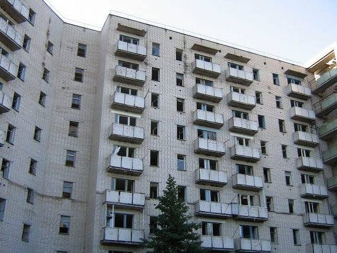
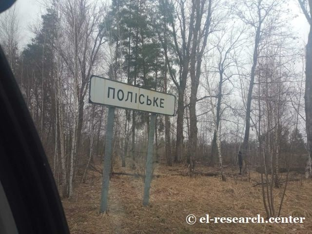

Фотохроніка наших експедицій
-

Прип'ять: ранковий туман над парком атракціонів та застиглими кабінками колеса огляду. -

Прип'ять: фасад Палацу культури «Енергетик», перед яким дерева вже вищі за другий поверх. -

Орбіта: бетонні контури недобудованого міста на тлі блакитної гладі Дніпра. -

Орбіта: тиша порожніх віконниць, де панують лише вітер і сосновий аромат. -

Поліське: старовинна забудова, яку дбайливо вкрили зелені крони поліського лісу. -

Поліське: осінній спокій біля мосту через річку Уж — місце для роздумів і тиші.